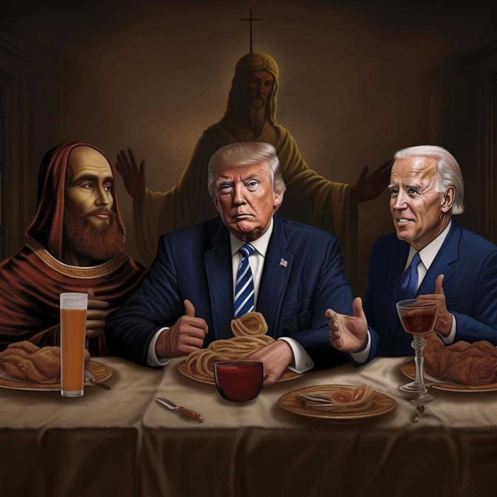

TOKENOMICS
0 % TAX
Fear not the taxman, for he holds no dominion here.
In the realm of The Last Supper, transactions flow freely without the burden of tax.
ABOUT
Welcome, noble pilgrims, to the 'Last Supper,' an eccentric union of beloved memes and crypto, where biblical grandeur meets modern wit. Our tableau of jesters includes the bumbling Biden, misplacing his walletlike it's national policy, and Pepe the Frog, the zen HODLer whose market mantras soothe our volatility vexed hearts.
Raptor Jesus, our miracle maker, turns Satoshis into fortunes with divine unpredictability, while Wojak, our unfortunate Peter, is renowned for buying tops, selling bottoms, and finding dips that only get deeper.
Isolation is a friend to our Bao, who obsesses over his 'low cap gems,' while Sonic the Hedgehog blazes through trades before one can blink. Our beloved Jesus who has embraced the wisdom of thug life stands in the eye of the storm, unflinching and cool behind his shades, even when candlestick charts rage around him.
Meet our Donald Trump, always second-guessing advice but brimming with 'yuge' instinctive predictions. The formidable KONG, known for his bold, sometimes reckless, trades that, by some miracle, always land him in the green.
And finally, our optimistic SpongeBob, ever cheerful, ever fortunate, even when his portfolio bleeds red.
In this sacred supper, we offer more than laughter and camaraderie, we present a sanctuary from transaction taxes - a gift from the crypto deities. Embark on this sacred voyage with us, where market turbulence transmutes into divine comedy, and investing evolves into a holy act of meme devotion. Gather round, all faithful disciples, for the Last Supper has been served. Prepare thy spirit for an epiphany of cosmic hilarity!
The Last Supper